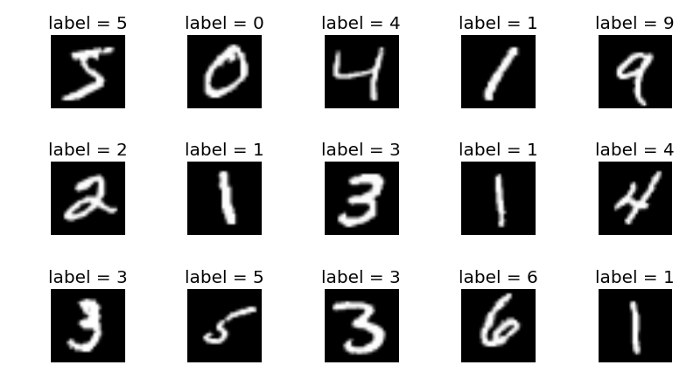

ML-Git¶
This notebook describes a basic execution flow of ml-git with its API. In it, we show how to obtain a dataset already versioned by ml-git, how to perform the versioning process of a model and the new data generated, using the MNIST dataset.
Notebook state management¶
If you have already run this notebook or another in this same folder, it is recommended that you perform a state restart by executing the cell below, because previously performed state changes may interfere with the execution of the notebook. Be aware, that procedure does not affect any remote repository.
%cd /api_scripts/mnist_notebook
!rm -rf ./logs
!rm -rf .ml-git
!rm -rf ./datasets
!rm -rf ./models
!rm -rf ./labels
!rm -rf .ipynb_checkpoints
!rm -rf .git
!rm -rf .gitignore
!rm -rf ./local_ml_git_config_server
!ml-git clone '/local_ml_git_config_server.git'
!cp ./train-images.idx3-ubyte ./local_ml_git_config_server/train-images.idx3-ubyte
!cp ./train-labels.idx1-ubyte ./local_ml_git_config_server/train-labels.idx1
%cd ./local_ml_git_config_server
1 - The dataset¶
Dataset MNIST is a set of small images of handwritten digits, in the version available in our docker environment, the set has a total of 70,000 images from numbers 0 to 9. Look at the below image which has a few examples instances:

2 - Getting the data¶
To start working with our dataset it is necessary to carry out the checkout command of ml-git in order to bring the data from our storage to the user's workspace.
from ml_git.api import MLGitAPI
api = MLGitAPI()
# def checkout(entity, tag, sampling=None, retries=2, force=False, dataset=False, labels=False, version=-1)
api.checkout('labels', 'labelsmnist', dataset=True)
mnist_dataset_path = 'datasets/handwritten/digits/mnist/data/'
mnist_labels_path = 'labels/handwritten/digits/labelsmnist/data/'
INFO - Metadata Manager: Pull [/api_scripts/mnist_notebook/.ml-git/labels/metadata]
INFO - Metadata: Performing checkout on the entity's lastest tag (handwritten__digits__labelsmnist__1)
blobs: 100%|██████████| 2.00/2.00 [00:00<00:00, 184blobs/s]
chunks: 100%|██████████| 2.00/2.00 [00:00<00:00, 206chunks/s]
files into workspace: 100%|██████████| 2.00/2.00 [00:00<00:00, 885files into workspace/s]
INFO - Repository: Initializing related datasets download
blobs: 100%|██████████| 2.00/2.00 [00:00<00:00, 226blobs/s]
chunks: 100%|██████████| 2.00/2.00 [00:00<00:00, 2.24chunks/s]
files into workspace: 100%|██████████| 2.00/2.00 [00:00<00:00, 13.2files into workspace/s]
Some important points to highlight here are that the tag parameter can be the name of the entity, this way the ml-git will get the latest version available for this entity. With the dataset=True signals that ml-git should look for the dataset associated with these labels
Once we have the data in the workspace, we can load it into variables
Training data¶
from mlxtend.data import loadlocal_mnist
import numpy as np
import pickle
X_train = pickle.load(open(mnist_dataset_path + 'train-images.idx3-ubyte', 'rb' ))
y_train = pickle.load(open(mnist_labels_path + 'train-labels.idx1-ubyte', 'rb' ))
print('Training data: ')
print('Dimensions: %s x %s' % (X_train.shape[0], X_train.shape[1]))
print('Digits: %s' % np.unique(y_train))
print('Class distribution: %s' % np.bincount(y_train))
Training data:
Dimensions: 60000 x 784
Digits: [0 1 2 3 4 5 6 7 8 9]
Class distribution: [5923 6742 5958 6131 5842 5421 5918 6265 5851 5949]
The training data consists of 60,000 entries of 784 pixels, distributed among the possible values according to the output above.
Test data¶
X_test, y_test = loadlocal_mnist(
images_path= mnist_dataset_path + 't10k-images.idx3-ubyte',
labels_path= mnist_labels_path + 't10k-labels.idx1-ubyte')
print('Test data: ')
print('Dimensions: %s x %s' % (X_test.shape[0], X_test.shape[1]))
print('Digits: %s' % np.unique(y_test))
print('Class distribution: %s' % np.bincount(y_test))
Test data:
Dimensions: 10000 x 784
Digits: [0 1 2 3 4 5 6 7 8 9]
Class distribution: [ 980 1135 1032 1010 982 892 958 1028 974 1009]
The test data consists of 10,000 entries of 784 pixels, distributed among the possible values according to the output above.
3 - Training and evaluating¶
Let’s take an example of RandomForest Classifier and train it on the dataset and evaluate it.
from sklearn.ensemble import RandomForestClassifier
from sklearn.metrics import accuracy_score
# Training on the existing dataset
rf_clf = RandomForestClassifier(random_state=42)
rf_clf.fit(X_train, y_train)
# Evaluating the model
y_pred = rf_clf.predict(X_test)
score = accuracy_score(y_test, y_pred)
print('Accuracy score after training on existing dataset', score)
Accuracy score after training on existing dataset 0.9705
4 - Versioning our model¶
As we do not have any previously versioned models, it will be necessary to create a new entity. For this we use the following command:
# def create(entity, entity_name, categories, mutability, **kwargs)
api.create('models', 'modelmnist', categories=['handwritten', 'digits'], mutability='mutable', bucket_name='mlgit', entity_dir='handwritten/digits')
INFO - MLGit: Model artifact created.
Once we have our model trained and evaluated, we will version it with ml-git. For that we need to save it in a file.
def save_model(model):
filename = 'models/handwritten/digits/modelmnist/data/rf_mnist.sav'
pickle.dump(model, open(filename, 'wb'))
save_model(rf_clf)
With the file in the workspace we use the following commands to create a version:
entity_type = 'models'
entity_name = 'modelmnist'
# def add(entity_type, entity_name, bumpversion=False, fsck=False, file_path=[])
api.add(entity_type, entity_name, metric={'accuracy': score})
# def commit(entity, ml_entity_name, commit_message=None, related_dataset=None, related_labels=None)
api.commit(entity_type, entity_name, related_dataset='mnist', related_labels='labelsmnist')
# def push(entity, entity_name, retries=2, clear_on_fail=False)
api.push(entity_type, entity_name)
INFO - Metadata Manager: Pull [/api_scripts/mnist_notebook/.ml-git/models/metadata]
INFO - Repository: models adding path [/api_scripts/mnist_notebook/models/handwritten/digits/modelmnist] to ml-git index
files: 100%|██████████| 1.00/1.00 [00:00<00:00, 1.56files/s]
⠋ Creating hard links in cache⠙ Creating hard links in cache
files: 100%|██████████| 1.00/1.00 [00:00<00:00, 7.13kfiles/s]
⠋ Updating index⠙ Updating index Checking removed files⠙ Checking removed files Commit manifest⠙ Commit manifest
INFO - Local Repository: Associate datasets [mnist]-[handwritten__digits__mnist__1] to the models.
INFO - Local Repository: Associate labels [labelsmnist]-[handwritten__digits__labelsmnist__1] to the models.
INFO - Metadata Manager: Commit repo[/api_scripts/mnist_notebook/.ml-git/models/metadata] --- file[handwritten/digits/modelmnist]
files: 100%|██████████| 520/520 [00:06<00:00, 82.0files/s]
⠋ Pushing metadata to the git repository⠙ Pushing metadata to the git repository
5 - Adding new data¶
At some point after training a model it may be the case that new data is available.
It is interesting that this new data is added to our entity to generate a second version of our dataset.
Let's add this data to our entity's directory:
! cp train-images.idx3-ubyte datasets/handwritten/digits/mnist/data/.
! cp train-labels.idx1-ubyte labels/handwritten/digits/labelsmnist/data/.
Let's take a look at our new dataset
# loading the dataset
X_train = pickle.load(open(mnist_dataset_path + 'train-images.idx3-ubyte', 'rb' ))
y_train = pickle.load(open(mnist_labels_path + 'train-labels.idx1-ubyte', 'rb' ))
print('Test data: ')
print('Dimensions: %s x %s' % (X_train.shape[0], X_train.shape[1]))
print('Digits: %s' % np.unique(y_train))
print('Class distribution: %s' % np.bincount(y_train))
Test data:
Dimensions: 180000 x 784
Digits: [0 1 2 3 4 5 6 7 8 9]
Class distribution: [17769 20226 17874 18393 17526 16263 17754 18795 17553 17847]
The train data now consists of 180,000 entries of 784 pixels, distributed among the possible values according to the output above.
6 - Versioning the dataset and labels with the new entries¶
dataset_file = 'datasets/handwritten/digits/mnist/data/train-images.idx3-ubyte'
pickle.dump(X_train, open(dataset_file, 'wb'))
labels_file = 'labels/handwritten/digits/labelsmnist/data/train-labels.idx1-ubyte'
pickle.dump(y_train, open(labels_file, 'wb'))
Versioning the dataset¶
entity_type = 'datasets'
entity_name = 'mnist'
api.add(entity_type, entity_name, bumpversion=True)
api.commit(entity_type, entity_name)
api.push(entity_type, entity_name)
INFO - Metadata Manager: Pull [/api_scripts/mnist_notebook/.ml-git/datasets/metadata]
INFO - Repository: datasets adding path [/api_scripts/mnist_notebook/datasets/handwritten/digits/mnist] to ml-git index
files: 100%|██████████| 2.00/2.00 [00:05<00:00, 2.63s/files]
'zdj7WmvrKwjWMCQMFFgcMFmGxEgQS2uXatYWxcE3ByNJeDmze'
⠋ Creating hard links in cache⠙ Creating hard links in cache
files: 100%|██████████| 2.00/2.00 [00:00<00:00, 2.24kfiles/s]
⠋ Updating index⠙ Updating index Checking removed files⠙ Checking removed files Commit manifest⠙ Commit manifest
INFO - Metadata Manager: Commit repo[/api_scripts/mnist_notebook/.ml-git/datasets/metadata] --- file[handwritten/digits/mnist]
files: 100%|██████████| 540/540 [00:17<00:00, 31.0files/s]
⠋ Pushing metadata to the git repository⠙ Pushing metadata to the git repository
Versioning the labels¶
entity_type = 'labels'
entity_name = 'labelsmnist'
api.add(entity_type, entity_name, bumpversion=True)
api.commit(entity_type, entity_name, related_dataset='mnist')
api.push(entity_type, entity_name)
INFO - Metadata Manager: Pull [/api_scripts/mnist_notebook/.ml-git/labels/metadata]
INFO - Repository: labels adding path [/api_scripts/mnist_notebook/labels/handwritten/digits/labelsmnist] to ml-git index
files: 0.00files [00:00, ?files/s]
'zdj7WaeJerH7ACFKfFgh9itrCoWt3iBCYagzYS2M7VhidBAmR'
files: 100%|██████████| 2.00/2.00 [00:00<00:00, 227files/s]
⠋ Creating hard links in cache⠙ Creating hard links in cache
files: 100%|██████████| 2.00/2.00 [00:00<00:00, 8.93kfiles/s]
⠋ Updating index⠙ Updating index Checking removed files⠙ Checking removed files Commit manifest⠙ Commit manifest
INFO - Local Repository: Associate datasets [mnist]-[handwritten__digits__mnist__2] to the labels.
INFO - Metadata Manager: Commit repo[/api_scripts/mnist_notebook/.ml-git/labels/metadata] --- file[handwritten/digits/labelsmnist]
files: 100%|██████████| 2.00/2.00 [00:00<00:00, 71.8files/s]
⠋ Pushing metadata to the git repository⠙ Pushing metadata to the git repository
7 - Training and evaluating¶
# Training on new data
rf_clf = RandomForestClassifier(random_state=42)
rf_clf.fit(X_train, y_train)
# Evaluating the model
y_pred = rf_clf.predict(X_test)
score = accuracy_score(y_test, y_pred)
print("Accuracy score after training on augmented dataset", score)
Accuracy score after training on augmented dataset 0.9746
We’ve improved the accuracy by ~0.4%. This is great.
8 - Versioning our model¶
save_model(rf_clf)
entity_type = 'models'
entity_name = 'modelmnist'
api.add(entity_type, entity_name, bumpversion=True, metric={'accuracy': score})
api.commit(entity_type, entity_name, related_dataset='mnist', related_labels='labelsmnist')
api.push(entity_type, entity_name)
INFO - Metadata Manager: Pull [/api_scripts/mnist_notebook/.ml-git/models/metadata]
INFO - Repository: models adding path [/api_scripts/mnist_notebook/models/handwritten/digits/modelmnist] to ml-git index
files: 100%|██████████| 1.00/1.00 [00:04<00:00, 4.46s/files]
'zdj7WfjwEm3XVzoggyG1kSPQhYMSMpbBdLzYMx5Z61StSbu5H'
⠋ Creating hard links in cache⠙ Creating hard links in cache
files: 100%|██████████| 1.00/1.00 [00:00<00:00, 6.36kfiles/s]
⠋ Updating index⠙ Updating index Checking removed files⠙ Checking removed files Commit manifest⠙ Commit manifest
INFO - Local Repository: Associate datasets [mnist]-[handwritten__digits__mnist__2] to the models.
INFO - Local Repository: Associate labels [labelsmnist]-[handwritten__digits__labelsmnist__2] to the models.
INFO - Metadata Manager: Commit repo[/api_scripts/mnist_notebook/.ml-git/models/metadata] --- file[handwritten/digits/modelmnist]
files: 100%|██████████| 1.39k/1.39k [00:22<00:00, 62.1files/s]
⠋ Pushing metadata to the git repository⠙ Pushing metadata to the git repository⠹ Pushing metadata to the git repository
9 - Reproducing our experiment with ml-git¶
Once the experiment data is versioned, it is common that it is necessary to re-evaluate the result, or that someone else wants to see the result of an already trained model.
For this, we will perform the model checkout in version 1 (without the data augmentation), to get the test data and the trained model.
mnist_dataset_path = 'datasets/handwritten/digits/mnist/data/'
mnist_labels_path = 'labels/handwritten/digits/labelsmnist/data/'
mnist_model_path = 'models/handwritten/digits/modelmnist/data/'
api.checkout('models', 'handwritten__digits__modelmnist__1', dataset=True, labels=True)
# Getting test data
X_test, y_test = loadlocal_mnist(images_path= mnist_dataset_path + 't10k-images.idx3-ubyte',
labels_path= mnist_labels_path + 't10k-labels.idx1-ubyte')
INFO - Metadata Manager: Pull [/api_scripts/mnist_notebook/.ml-git/models/metadata]
blobs: 100%|██████████| 1.00/1.00 [00:00<00:00, 95.1blobs/s]
chunks: 100%|██████████| 1.00/1.00 [00:00<00:00, 3.44chunks/s]
files into workspace: 100%|██████████| 1.00/1.00 [00:14<00:00, 14.1s/files into workspace]
INFO - Repository: Initializing related datasets download
blobs: 100%|██████████| 2.00/2.00 [00:00<00:00, 228blobs/s]
chunks: 100%|██████████| 2.00/2.00 [00:00<00:00, 20.6chunks/s]
files into workspace: 100%|██████████| 2.00/2.00 [00:04<00:00, 2.15s/files into workspace]
INFO - Repository: Initializing related labels download
blobs: 100%|██████████| 2.00/2.00 [00:00<00:00, 810blobs/s]
chunks: 100%|██████████| 2.00/2.00 [00:00<00:00, 234chunks/s]
files into workspace: 100%|██████████| 2.00/2.00 [00:00<00:00, 761files into workspace/s]
With the test data in hand, let's upload the model and evaluate it for our dataset.
loaded_model = pickle.load(open(mnist_model_path + 'rf_mnist.sav', 'rb'))
y_pred = loaded_model.predict(X_test)
score = accuracy_score(y_test, y_pred)
print('Accuracy score for version 1: ', score)
Accuracy score for version 1: 0.9705
Now let's take the model from the version 2 (model trained with more data) and evaluate it for the test set.
api.checkout('models', 'handwritten__digits__modelmnist__2')
loaded_model = pickle.load(open(mnist_model_path + 'rf_mnist.sav', 'rb'))
y_pred = loaded_model.predict(X_test)
score = accuracy_score(y_test, y_pred)
print('Accuracy score for version 2: ', score)
INFO - Metadata Manager: Pull [/api_scripts/mnist_notebook/.ml-git/models/metadata]
blobs: 100%|██████████| 1.00/1.00 [00:00<00:00, 1.96kblobs/s]
chunks: 100%|██████████| 1.00/1.00 [00:00<00:00, 18.4chunks/s]
files into workspace: 100%|██████████| 1.00/1.00 [00:05<00:00, 5.36s/files into workspace]
Accuracy score for version 2: 0.9746
In a quick and practical way it was possible to obtain the models generated in the experiments and to evaluate them again.
Conclusions¶
At the end of this execution we have two versions of each entity. If someone else wants to replicate this experiment, they can check out the model with the related dataset and labels.
info_data = api.get_models_metrics('modelmnist', export_type='csv')
import pandas as pd
info_table = pd.read_csv(info_data)
# Displays whole table
info_table
| Date | Tag | Related dataset - (version) | Related labels - (version) | accuracy | |
|---|---|---|---|---|---|
| 0 | 2021-03-25 14:52:42 | handwritten__digits__modelmnist__1 | mnist - (1) | labelsmnist - (1) | 0.9705 |
| 1 | 2021-03-25 14:55:52 | handwritten__digits__modelmnist__2 | mnist - (2) | labelsmnist - (2) | 0.9746 |